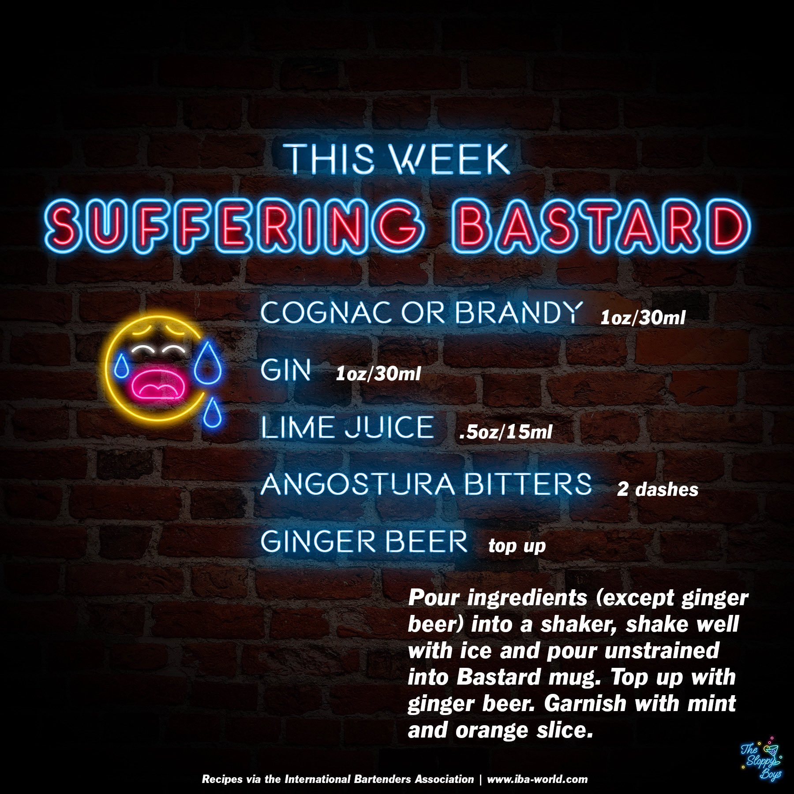

Suffering Bastard
Ingredients
- Cognac or Brandy (1oz/30ml)
- Gin (1oz/30ml)
- Lime Juice (.5oz/15ml)
- Angostura Bitters (2 dashes)
- Ginger Beer (top up)
Steps
- Pour ingredients (except ginger beer) into a shaker, shake well with ice and pour unstrained into Bastard mug.
- Top up with ginger beer.
- Garnish with mint and orange slice.
Notes